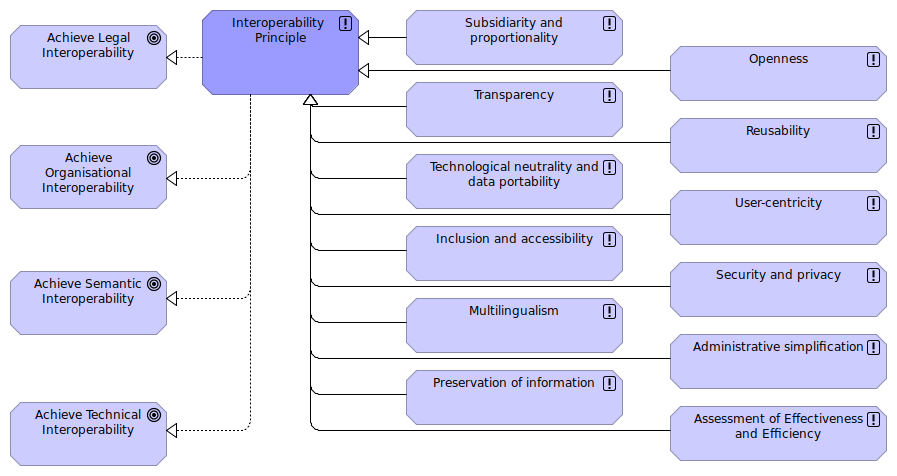

EIF Underlying Principles view
(
)

The European Interoperability Framework underlying principles view models the motivation of the EIRA © in terms of goals to be achieved and the principles to be followed in order to achieve interoperability in public services. The interoperability principles are fundamental behavioural aspects to drive interoperable public services. They describe the context in which European public services are designed and implemented. The twelve underlying principles of the EIF are grouped into four categories: 1. Principle setting the context for EU actions on interoperability (Subsidiarity and proportionality); 2. Core interoperability principles (Openness, Transparency, Reusability, Technological neutrality and data portability); 3. Principles related to generic user needs and expectations (User-centricity, Inclusion and accessibility, Security and privacy, Multilingualism); 4. Foundation principles for cooperation among public administrations (Administrative simplification, Preservation of information, Assessment of Effectiveness and Efficiency). Narrative: The twelve interoperability principles of the New EIF ([Subsidiarity and proportionality], [Openness], [Transparency], [Transparency], [Technological neutrality and data portability], [User-centricity], [Inclusion and accessibility], [Security and privacy], [Multilingualism], [Administrative simplification], [Preservation of information] and [Assessment of Effectiveness and Efficiency]) together fulfil the goals of achieving interoperability: [Achieve Legal Interoperability], [Achieve Organisational Interoperability], [Achieve Semantic Interoperability] and [Achieve Technical Interoperability]. Source: The New EIF. https://ec.europa.eu/isa2/eif_en The new European Interoperability Framework (EIF) is part of the Communication (COM(2017)134) from the European Commission adopted on 23 March 2017. The framework gives specific guidance on how to set up interoperable digital public services.
dct:title
EIF Underlying Principles view
Interoperability Principle
Subsidiarity and proportionality
Openness
User-centricity
Reusability
Administrative simplification
Preservation of information
Multilingualism
Security and privacy
Inclusion and accessibility
Technological neutrality and data portability
Transparency
Assessment of Effectiveness and Efficiency
Achieve Legal Interoperability
Achieve Organisational Interoperability
Achieve Semantic Interoperability
Achieve Technical Interoperability